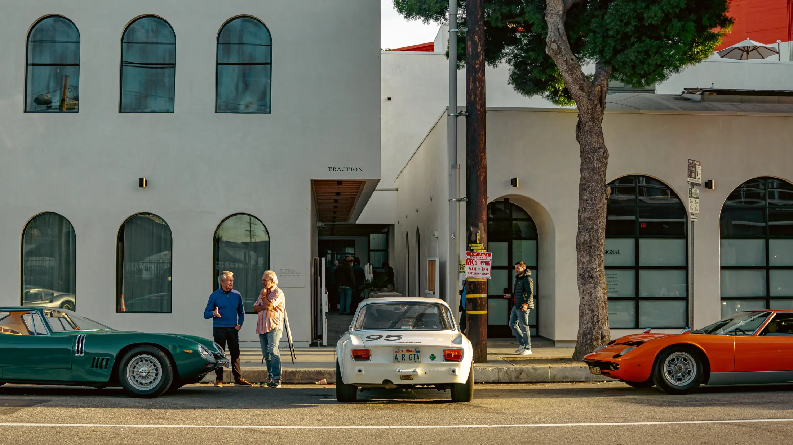

Visit
821 Traction Ave
Los Angeles, CA 90013
- Neighbourhood
- Arts District, downtown Los Angeles
- Hours
- Each tenant keeps its own hours. Check their pages or Instagram before a visit.
- Getting here
- Street parking on Traction Ave and nearby lots. Metro to Little Tokyo/Arts District, then about ten minutes on foot.
- Directions
- Open in Maps
- Leasing
- Space opens up now and then. Send a note through @signalshops.

Questions
Where is Signal?
At 821 Traction Ave, Los Angeles, CA 90013, in the Arts District of downtown Los Angeles.
What is at Signal?
Thirteen shops, cafés, studios and offices around a shared courtyard: Departamento, Concierge Coffee, Formas, Simon Miller, Beamz, Currently Running, Alchemy Works, Prune, M5, Klein, Flamingo Estate, Greycroft and Anine Bing.
Who is behind Signal?
Raan Parton, who started Apolis and Alchemy Works, and Paolo Carini. The building was designed by Klein Agency.
How old is the building?
Built in 1910 as a 25,000-square-foot warehouse. Rebuilt and extended to 40,000 square feet over two floors, opening as Signal in 2024.
When is Signal open?
Each tenant keeps its own hours, listed on its page here. Most shops open late morning, Concierge Coffee from 7 on weekdays.
Where do I park?
Street parking on Traction Ave and paid lots nearby.
How do I get there by Metro?
Take the Metro to Little Tokyo/Arts District station, then walk about ten minutes.
Can I rent a space at Signal?
Space opens up now and then. Send a note through @signalshops on Instagram.